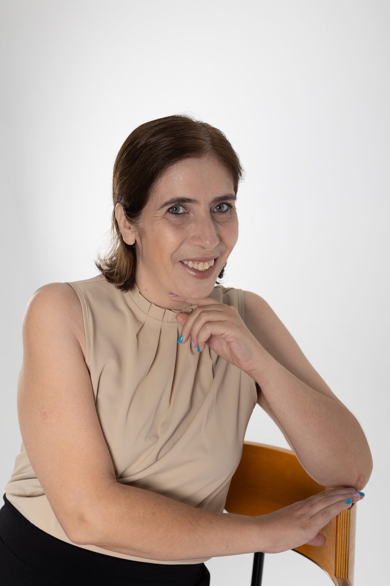
IT Forum Mulheres 2026: entre as 35 profissionais reconhecidas
Segunda edição da lista do IT Forum, que avalia impacto no ecossistema, inovação, liderança, contribuição para diversidade e visibilidade pública.
Ver a lista no IT ForumProfessora do Instituto de Informática da UFG, cofundadora e diretora executiva do CEIA, o Centro de Excelência em Inteligência Artificial. Sob minha gestão, o centro já executou mais de 150 projetos de PD&I com empresas e captou mais de R$ 500 milhões em cinco anos.
Empresa, pesquisa ou imprensa: me conte em poucas palavras o que você procura e eu direciono para o time certo.
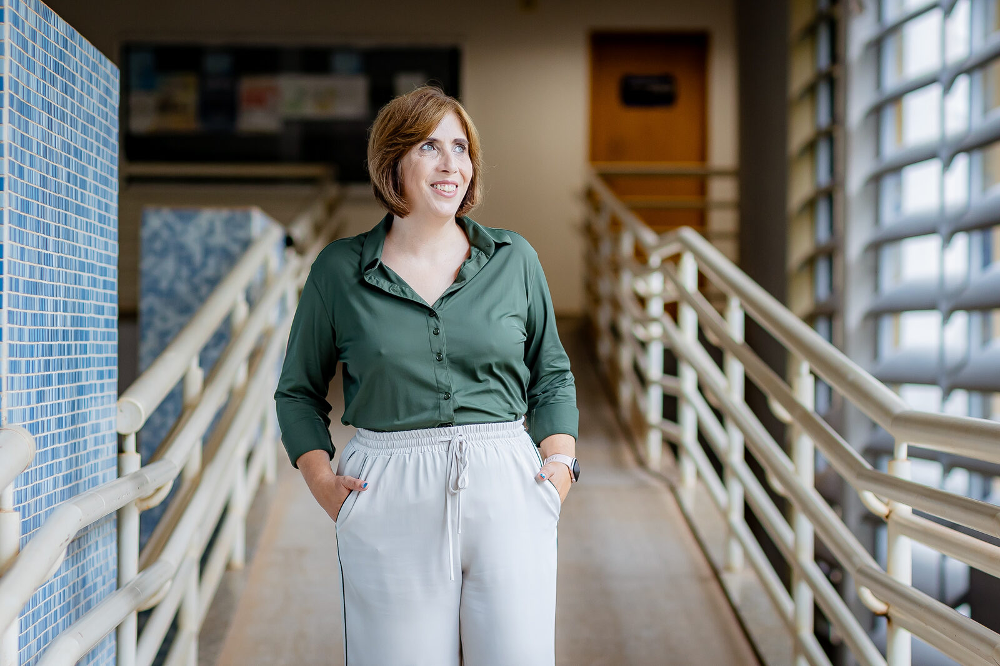
Projetos, programas e parcerias

Segunda edição da lista do IT Forum, que avalia impacto no ecossistema, inovação, liderança, contribuição para diversidade e visibilidade pública.
Ver a lista no IT Forum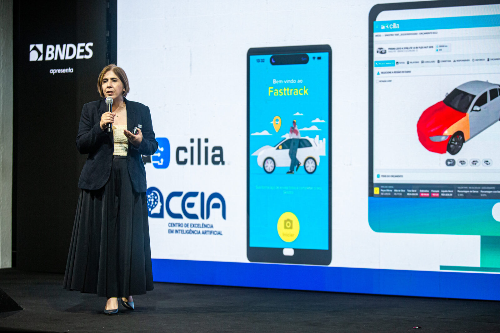
Uma pausa sem fiscalização externa e sem acesso para universidades tende a concentrar a tecnologia nas empresas que já lideram.
Ler na Exame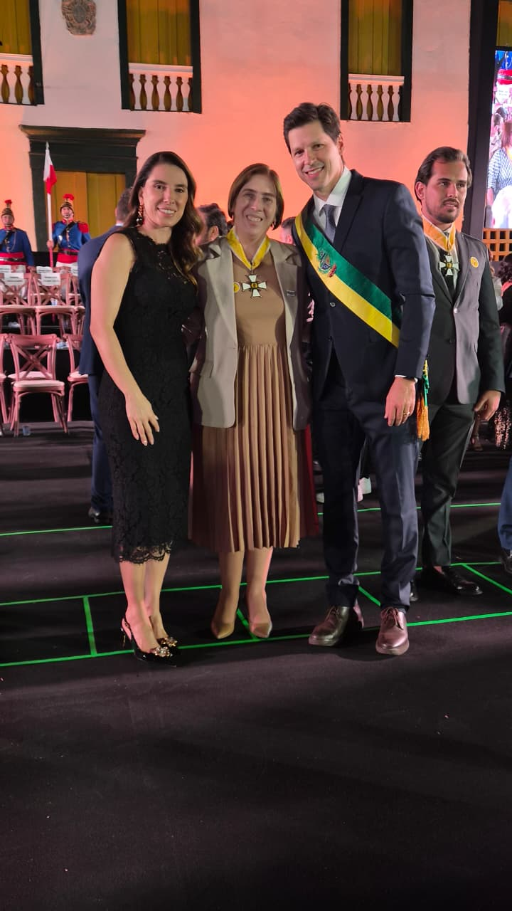
A maior honraria do Estado de Goiás. Um reconhecimento que pertence a cada pesquisador, estudante, parceiro e gestor público que apostou no CEIA.
Ler a notíciaAvaliações feitas por quem contratou, por quem governa e por quem acompanha o setor de tecnologia no país.
Ranking definido pela avaliação das próprias empresas que contrataram projetos de PD&I. É a nota de quem pagou, usou e mediu o resultado.
CEIA, sob a direção executiva de Telma SoaresOs projetos de 2022 e 2023 foram coordenados por Telma com Anderson Soares.
A maior honraria do Estado, concedida ao lado de Anderson Soares pela transformação de Goiás em polo nacional de IA. Ler a notícia
Entre as 35 profissionais reconhecidas em tecnologia no Brasil por impacto, inovação, liderança e contribuição para diversidade. Ver a lista
Os materiais de formação do CEIA entraram na plataforma global da ONU. Ler sobre o programa
O AKCIT, centro de competência associado ao CEIA, foi o primeiro grupo de pesquisa da América Latina reconhecido pelo programa.
Curso pioneiro, nascido de projetos de PD&I com empresas, que hoje recebe alunos de todo o país.
Cada frente tem um resultado que dá para medir. Nenhuma delas é trabalho de uma pessoa só.
+150 projetos de PD&I executados com empresas
Cofundei o CEIA em 2019 e sou diretora executiva desde 2022. Como Unidade Embrapii, o centro divide com a empresa o investimento em pesquisa.
Apresentar uma demanda1ª instituição latino-americana no programa AI for Good da ONU
O CEIA faz parte do programa NVIDIA AI Nations. Pesquisadores do centro lançaram com o Google o GAIA, modelo aberto em português do Brasil.
Ler sobre o AI for Good1º bacharelado em inteligência artificial do Brasil, criado em 2020
O curso nasceu de projetos de PD&I com empresas e forma a equipe que hoje executa esses projetos. Na outra ponta, a Olimpíada de IA Aplicada, pela qual sou responsável, oferece R$ 420 mil em prêmios na edição de 2026.
Ver a frente de formaçãoResultado de muitas mãos: pesquisadores, estudantes, empresas parceiras e gestores públicos que apostaram em inteligência artificial feita em Goiás.
Números atualizados em outubro de 2026 com base nas informações institucionais do CEIA.
Quem chega até nós costuma trazer uma destas impressões. Os fatos ajudam a ajustar a conversa logo no início.
São mais de 150 projetos de PD&I executados com empresas e mais de R$ 500 milhões captados em cinco anos, boa parte com a iniciativa privada. Aplicação prática é o dia a dia do centro.
Os projetos aplicados se sustentam em pesquisa de fato: meta-learning, aprendizado por reforço e otimização multiobjetivo com meta-heurísticas. Foi essa base que deu origem ao Bacharelado em IA.
Não. O CEIA entra como coinvestidor nos projetos de PD&I que desenvolve, por meio do modelo Embrapii. Risco e investimento são compartilhados com a empresa parceira.
O primeiro contato chega direto a mim, e o encaminhamento para a equipe de PD&I acontece a partir dessa conversa, sem intermediários.
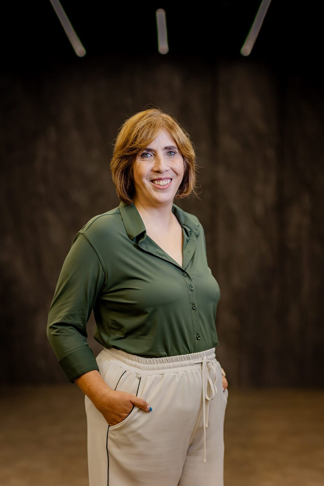
Há mais de 20 anos trabalho com inovação, tecnologia e inteligência artificial. Hoje dirijo o CEIA, centro que nasceu de projetos de PD&I com a iniciativa privada nos quais fui pesquisadora principal. A linha do tempo resume esse caminho.
Investir em bolsas é investir em pessoas. Por isso o CEIA paga bolsa a estudantes desde a graduação, dentro de projetos reais com empresas, e já trouxe de volta mais de 15 pesquisadores que trabalhavam fora do Brasil.
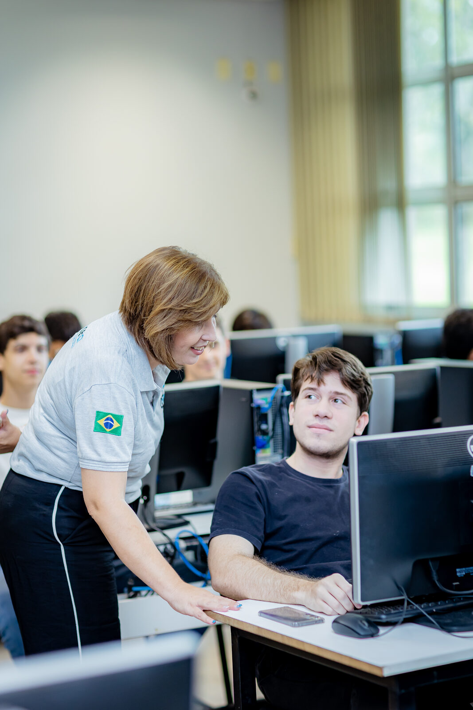
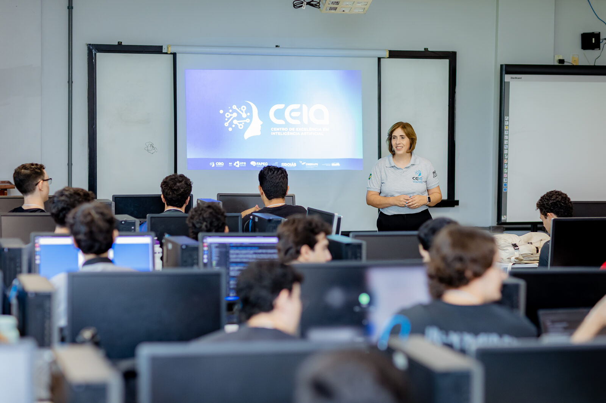
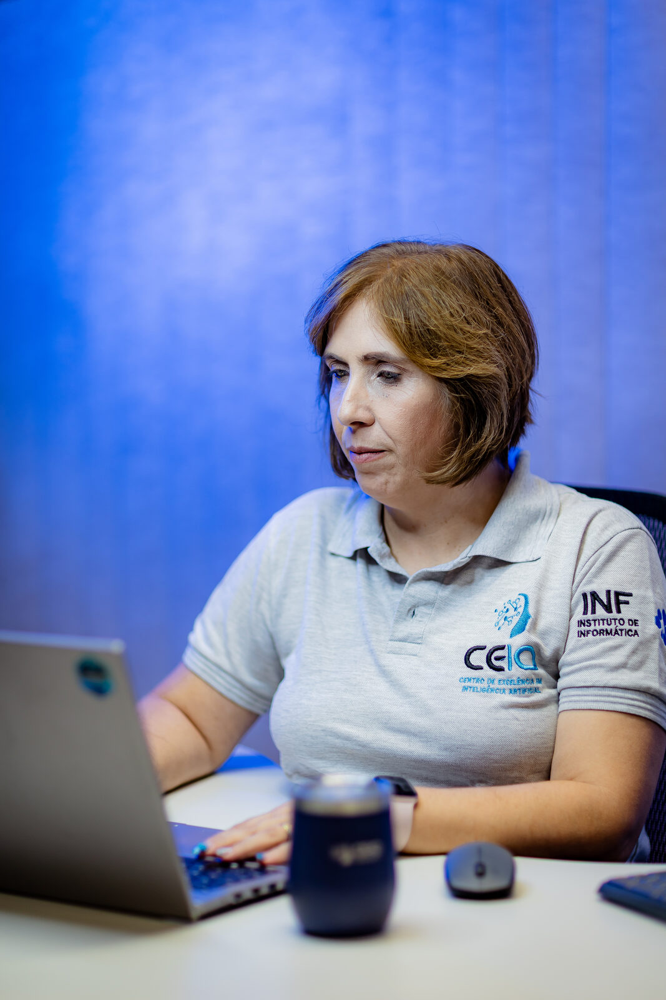
Entrevistas e reportagens em que falei sobre infraestrutura, dado em português, formação de talentos e projetos aplicados. Os links levam ao conteúdo original de cada veículo.
Você faz a sua inteligência própria, você resolve um problema regional, um problema do país.Exame, outubro de 2026
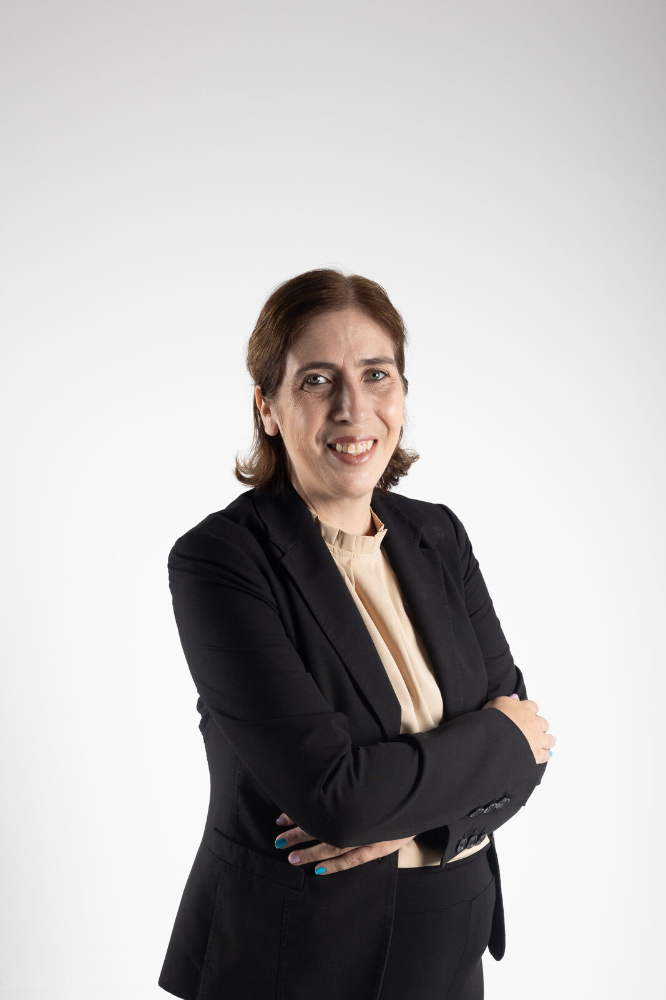
:format(webp))
Existem outros tipos de IAs brasileiras que a gente poderia desenvolver.
:format(webp))
Eu teria muito cuidado em transformar superinteligência em uma categoria técnica ou jurídica neste momento.

Sobre o convênio do CEIA com o Governo de Goiás e o lugar do Brasil na cadeia da IA. Se analisarmos historicamente, o Brasil cresceu muito como fornecedor de commodities.
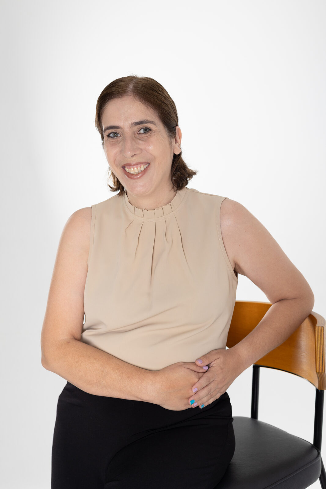
Faltam infraestrutura e dado público em português, mas há espaço para IA soberana em nichos como saúde e biodiversidade, onde o dado é brasileiro.
Ler matéria:format(webp))
Toda vez que chega um novo equipamento, existe uma curva de aprendizado para adaptar as IAs a essas novas arquiteturas.
Perfil sobre a criação do primeiro Bacharelado em IA do Brasil e a liderança de uma mulher em uma área com predominância masculina.
Ler matériaJornalistas: temas em que posso contribuir (clique para filtrar ou envie uma pauta).
Atualizações sobre o CEIA, bastidores de projetos e opiniões sobre IA no Brasil. O LinkedIn é o canal principal.
Atualizadas a partir do arquivo posts.json do site.
Carregando publicações…
Palco, gestão pública e laboratório. O trabalho acontece nesses lugares, quase sempre com outras pessoas no enquadramento.
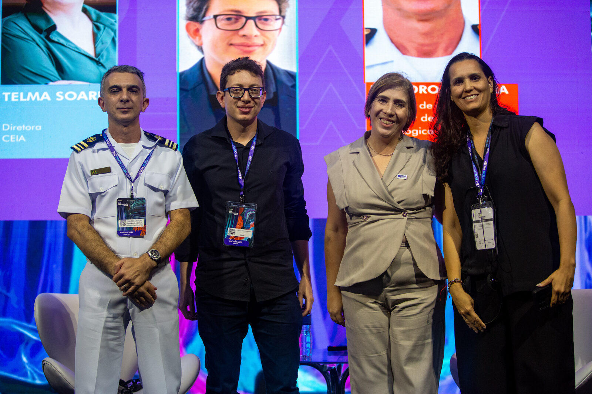
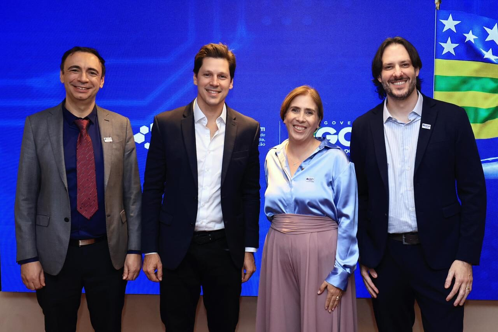
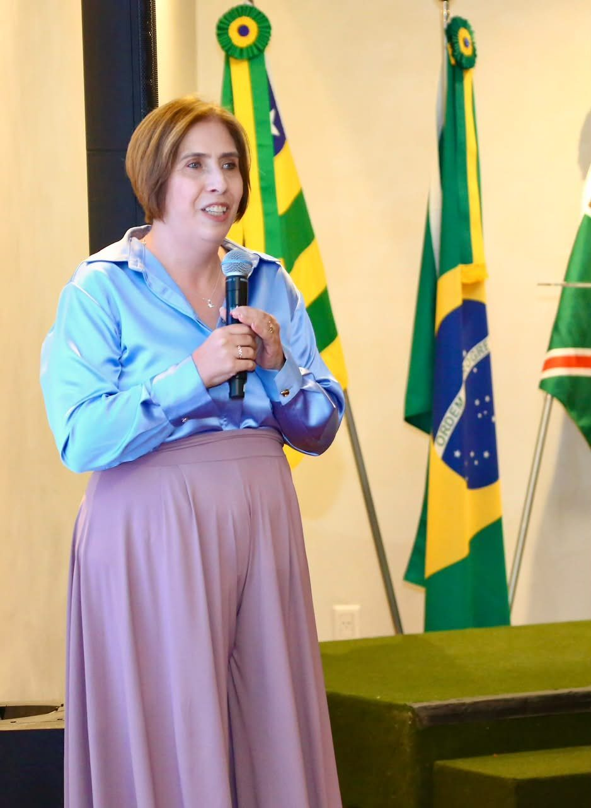
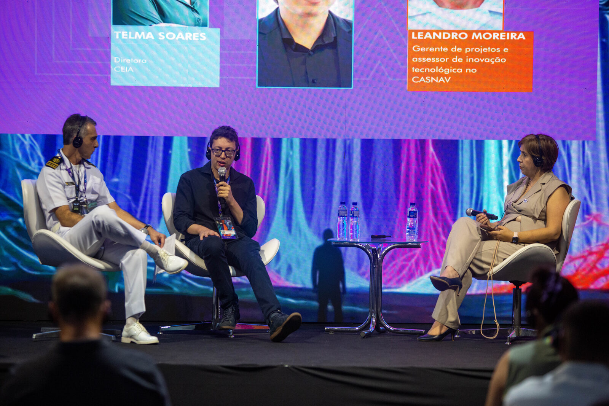
A conversa começa com uma mensagem curta: quem é você, de onde fala e o que precisa. A partir dela, eu direciono para o time certo.
Equipe de PD&I ou reunião direta comigo, conforme o porte e a demanda. O CEIA entra como coinvestidor pelo modelo Embrapii.
Apresentar uma demandaBolsas desde a graduação, dentro de projetos reais com empresas. O caminho é o banco de talentos do Portal CEIA e a gestão de RH.
Entrar no banco de talentosInfraestrutura de IA, dado em português, soberania em nichos, formação de talentos e PD&I com empresas. Agenda e materiais com a assessoria do CEIA.
Propor uma pauta